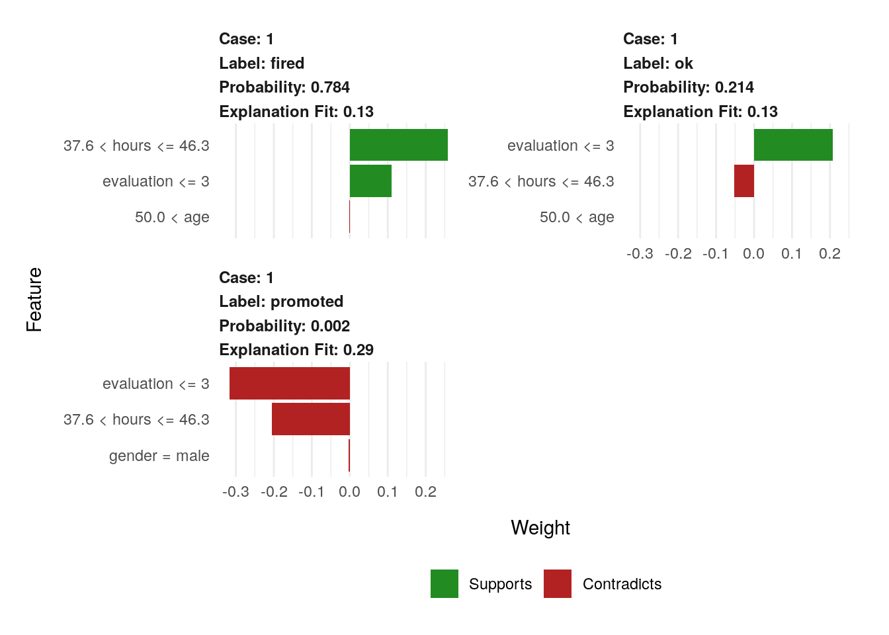

Chapter 18 Partial Dependency Profiles
One of the first and the most popular tools for inspection of black-box models on the global level are Partial Dependence Plots (sometimes called Partial Dependence Profiles).
PDP were introduced by Friedman in 2000 in his paper devoted to Gradient Boosting Machines (GBM) - new type of complex yet effective models (Friedman 2000). For many years PDP as sleeping beauties stay in the shadow of the boosting method. But this has changed in recent years. PDP are very popular and available in most of data science languages. In this chapter we will introduce key intuitions, explain the math beyond PDP and discuss strengths and weaknesses.
General idea is to show how the expected model response behaves as a function of a selected feature. Here the term ,,expected’’ will be estimated simply as the average over the population of individual Ceteris Paribus Profiles introduced in 6.
18.1 Definition
Partial Dependency Profile for for a model \(f\) and a variable \(x^j\) is defined as
\[ g_{PD}^{f, j}(z) = E[f(x^j=z, X^{-j})] = E[f(x|^j=z)]. \]
So it’s an expected value for \(x^j = z\) over marginal distribution \(X^{-j}\) or equivalently expected value of \(f\) after variable \(x^j\) is set to \(z\).
Exercise
Let \(f = x_1 + x_2\) and distribuion of \((x_1, x_2)\) is given by \(x_1 \sim U[0,1]\) and \(x_2=x_1\).
Calculate \(g_{PD}^{f, 1}(z)\).
Answer \(g_{PD}^{f, 1}(z) = z + 0.5\).
18.2 Estimation
Let’s see how they are constructed step by step.
Here we will use a random forest rf_5 model for the titanic dataset. Examples are related to a single variable age.
The expectation cannot be calculated directly as we do not know fully neither the distribution of \(X^{-j}\) nor the \(f()\). Yet this value may be estimated by as average from CP profiles.
\[ \hat g_{PD}^{f, j}(z) = \frac 1n \sum_{i=1}^{N} f(x_i^j=z, x^{-j}_i)] = \frac 1n \sum_{i=1}^{N} f(x_i|^j=z). \]
- Calculate Ceteris Paribus Profiles for observations from the dataset
As it was introduced in 6 Ceteris Paribus profiles are calculated for observations. They show how model response change is a selected variable in this observation is modified.
\[ CP^{f, j, x}(z) := f(x|^j = z). \]
Such profiles can be calculated for example with the ingredients::ceteris_paribus function.
(#fig:pdp_part_1)Ceteris Paribus profiles for 100 observations, the age variable and the random forest model
So for a single model and a single variable we get a bunch of what-if profiles. In the figure @ref(fig:pdp_part_1) we show an example for 100 observations. Despite some variation (random forest are not as stable as we would hope) we see that most profiles are decreasing. So the older the passengers is the lower is the survival probability.
- Aggregate Ceteris Paribus into a single Partial Dependency Profile
Simple pointwise average across CP profiles. If number of CPprofiles is large, it is enoug to sample some number of them to get resonably accurate PD profiles.
Here we show profiles calculated with ingredients package, but find siilar implementation in the pdp package (Greenwell 2017b), ALEPlots package (Apley 2018b) or iml (Molnar, Bischl, and Casalicchio 2018c) package.
Such average can be calculated with the function ingredients::aggregate_profiles.
pdp_rf <- aggregate_profiles(cp_rf)
plot(pdp_rf) +
ggtitle("Partial Dependency profile", "For a random forest model / Titanic data") 
So for a single model and a single variable we get a profile. See an example in figure @ref(fig:pdp_part_2). It is much easier than following 100 separate curves, and in cases in which Ceteris Paribus are more or less parallel, the Partial Dependency is a good summary of them.
The average response is of course more stable (as it’s an average) and in this case is more or less a decreasing curve. It’s much easier to notice that the older the passenger is the lower the survival probability. Moreover it is easier to notice that the largest drop in survival changes happen for teenagers. On average the survival for adults is 30 percent points smaller than for kids.
(#fig:pdp_part_2)Partial Dependency profile as an average for 100 observations
18.3 Clustered Partial Dependency Profiles
As we said in the previous section, Partial Dependency is a good summary if Ceteris Paribus profiles are similar, i.e. parallel. But it may happen that the variable of interest is in interaction with some other variable. Then profiles are not parallel because the effect of variable of interest depends on some other variables.
So on one hand it would be good to summaries all this Ceteris Paribus profiles with smaller number of profiles. But on another hand a single aggregate may not be enough. To deal with this problem we propose to cluster Ceteris Paribus profiles and check how homogenous are these profiles.
The most straightforward approach would be to use a method for clustering, like k-means algorithm or hierarchical clustering, and see how these cluster of profiles behave. Once clusters are established we can aggregate within clusters in the same way as in case of Partial Dependency Plots.
Such clusters can be calculated with the ingredients::cluster_profiles function. We choose the hierarchical clustering with Ward linkage as it gives most stable results.
So for a single model and a single variable we get \(k\) profiles. The common problem in clustering is the selection of \(k\). However in our case, as it’s an exploration, the problem is simpler, as we are interesting if \(k=1\) (Partial Dependency is a good summary) or not (there are some interactions).
See an example in Figure @ref(fig:pdp_part_4). It is easier to notice that Ceteris Paribus profiles can be groups in three clusters. Group of passengers with a very large drop in the survival (cluster 1), moderate drop (cluster 2) and almost no drop in survival (cluster 3). Here we do not know what other factors are linked with these clusters, but some additional exploratory analysis can be done to identify these factors.
(#fig:pdp_part_4)Cluster profiles for 3 clusters over 100 Ceteris Paribus profiles
18.4 Grouped Partial Dependency Profiles
Once we see that variable of interest may be in interaction with some other variable, it is tempting to look for the factor that distinguish clusters.
The most straightforward approach is to use some other variable as a grouping variable. This can be done by setting the groups argument in the ingredients::aggregate_profiles function.
library("ingredients")
selected_passangers <- select_sample(titanic, n = 100)
cp_rf <- ceteris_paribus(explain_titanic_rf, selected_passangers)
pdp_Sex_rf <- aggregate_profiles(cp_rf, variables = "age",
groups = "gender")See an example in Figure @ref(fig:pdp_part_5). Clearly there is an interaction between Age and Sex. The survival for woman is more stable, while for man there is more sudden drop in Survival for older passengers.
Check how the interaction for Pclass (passenger class) looks like.
(#fig:pdp_part_5)Grouped profiles with respect to the gender variable
18.5 Contrastive Model Comparisons
Contrastive comparisons of Partial Dependency Plots are useful not only for subgroups of observations but also for model comparisons.
Why one would like to compare models? There are at least three reasons for it.
- Agreement of models will calm us. Some models are known to be more stable other to be more elastic. If profiles for models from these two classes are not far from each other we can be more convinced that elastic model is not over-fitted.
- Disagreement of models helps to improve. If simpler interpretable model disagree with an elastic model, this may suggest a feature transformation that can be used to improve the interpretable model. For example if random forest learned non linear relation then it can be captures by a linear model after suitable transformation.
- Validation of boundary conditions. Some models are know to have different behavior on the boundary, for largest or lowest values. Random forest is known to shrink predictions towards the average, while support vector machines are known to have larger variance at edges. Contrastive comparisons may help to understand differences in boundary behavior.
Generic ingredients::plot function handles multiple models as consecutive arguments.
See an example in Figure @ref(fig:pdp_part_7). Support vector model is compared with generalized linear model (logistic regression) with splines. Both models agree when it comes to a general relation between Age and Survival but the curve for SVM is more flat. Difference between both models is largest for lowest values of the variable age.

(#fig:pdp_part_7)Comparison on two predictive models with different structures.
References
Apley, Dan. 2018b. ALEPlot: Accumulated Local Effects (Ale) Plots and Partial Dependence (Pd) Plots. https://CRAN.R-project.org/package=ALEPlot.
Friedman, Jerome H. 2000. “Greedy Function Approximation: A Gradient Boosting Machine.” Annals of Statistics 29: 1189–1232.
Greenwell, Brandon M. 2017b. “Pdp: An R Package for Constructing Partial Dependence Plots.” The R Journal 9 (1): 421–36. https://journal.r-project.org/archive/2017/RJ-2017-016/index.html.
Molnar, Christoph, Bernd Bischl, and Giuseppe Casalicchio. 2018c. “Iml: An R Package for Interpretable Machine Learning.” JOSS 3 (26). Journal of Open Source Software: 786. https://doi.org/10.21105/joss.00786.